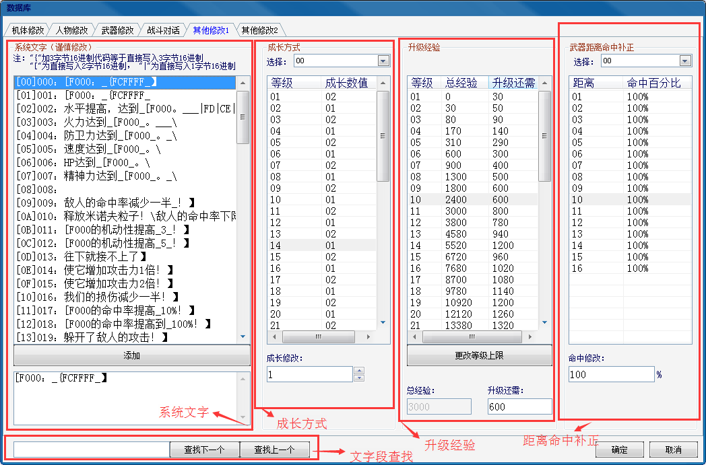

功能区域分布：

1.系统文字：无特殊情况不建议更改，系统文字包含有较多供程序识别的固定字节标识，不可更改，如需更改，只能更改相应的文字和数值。在左下编辑框直接输入即可更改。
2.成长方式：成长方式包含血量，三围和精神的成长，成长数值每级均是固定，原版所谓的1.5，2.5之类的成长也是通过1，2或者23交叠成长的方式实现的。
3.升级经验：包含了当前等级的总经验和升至下级所需要的经验，一般不建议更改，以避免玩家在攻略过程中引起不必要的麻烦。
4.武器距离命中补正：即武器随着距离的增长而减少的命中值（固定值），一共有4种，实际有效为01，2两种。